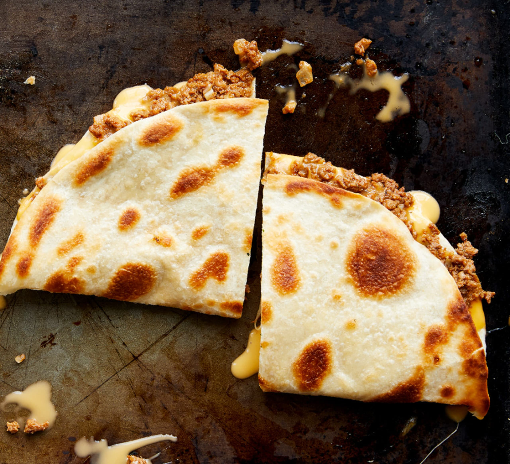

Quesadilla

About
This recipe can be made as complex or as simple as you want.
I'll show you my way which uses spices and chicken to elevate this humble dish.
What are you waiting for, lets cook!
Ingredients
- 2 flour tortillas
- Cheese of your choosing. Chedar or cotijan cheese works great!
- Black beans, drained
- Cooked chicken breast
- Smoked habanero powder
- Butter
Steps
- Grate your cheese of choice and put it on one tortilla
- Add black beans and chicken to the cheese on the tortilla
- Sprinkle a little bit of smoked habanero powder. A little goes a long ways
- Put the second tortilla on top
- Put butter into a hot cast iron skillet or stainless steel frying pan.
- Once the butter has melted, put in the quesadilla. Put a lid on the pot. Cook for 3-5 minutes
- After cooking, flip the quesadilla, flip and repeat for the other side
- Finally, take it out of the pan, cut, and serve with sour cream and guacamole.